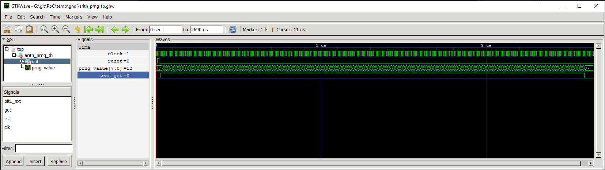

Simulation¶
Contents of this Page
Overview¶
The Python Infrastructure shipped with the PoC-Library can launch manual, half-automated and fully automated testbenches. The testbench can be run in command line or GUI mode. If available, the used simulator is launched with pre-configured waveform files. This can be done by invoking one of PoC’s frontend script:
poc.sh:
poc.sh <common options> <simulator> <module> <simulator options>
Use this fronend script on Darwin, Linux and Unix platforms.poc.ps1:
poc.ps1 <common options> <simulator> <module> <simulator options>
Use this frontend script Windows platforms.Attention
All Windows command line instructions are intended for Windows PowerShell, if not marked otherwise. So executing the following instructions in Windows Command Prompt (
cmd.exe) won’t function or result in errors!
See also
- PoC Configuration
- See the Configuration page on how to configure PoC and your installed simulator tool chains. This is required to invoke the simulators.
- Supported Simulators
- See the Intruction page for a list of supported simulators.
Quick Example¶
The following quick example uses the GHDL Simulator to analyze, elaborate and
simulate a testbench for the module arith_prng (Pseudo Random Number
Generator - PRNG). The VHDL file arith_prng.vhdl is located at
PoCRoot\src\arith and virtually a member in the PoC.arith namespace.
So the module can be identified by an unique name: PoC.arith.prng, which is
passed to the frontend script.
Example 1:
cd PoCRoot
.\poc.ps1 ghdl PoC.arith.prng
The CLI command ghdl chooses GHDL Simulator as the simulator and
passes the fully qualified PoC entity name PoC.arith.prng as a parameter
to the tool. All required source file are gathered and compiled to an
executable. Afterwards this executable is launched in CLI mode and it’s outputs
are displayed in console:

Each testbench uses PoC’s simulation helper packages to count asserts and to
track active stimuli and checker processes. After a completed simulation run,
an report is written to STDOUT or the simulator’s console. Note the line
SIMULATION RESULT = PASSED. For each simulated PoC entity, a line in the
overall report is created. It lists the runtime per testbench and the simulation
status (... ERROR, FAILED, NO ASSERTS or PASSED).
Example 2:
Passing an additional option --gui to the service tool, opens the testbench
in GUI-mode. If a waveform configuration file is present (e.g. a *.gtkw
file for GTKWave), then it is preloaded into the simulator’s waveform viewer.
cd PoCRoot
.\poc.ps1 ghdl PoC.arith.prng --gui
The opened waveform viewer and displayed waveform should look like this:
{kind=link}
Vendor Specific Testbenches¶
PoC is shipped with a set of well known FPGA development boards. This set is
extended by a list of generic boards, named after each supported FPGA vendor.
These generic boards can be used in simulations to select a representative
FPGA of a supported device vendor. If no board or device name is passed to a
testbench run, the GENERIC board is chosen.
| Board Name | Target Board | Target Device |
|---|---|---|
| GENERIC | GENERIC | GENERIC |
| Altera | DE4 | Stratix-IV 230 |
| Lattice | ECP5Versa | ECP5-45UM |
| Xilinx | KC705 | Kintex-7 325T |
A vendor specific testbench can be launched by passing either --board=xxx or
--device=yyy as an additional parameter to the PoC scripts.
# Example 1 - A Lattice board
.\poc.ps1 ghdl PoC.arith.prng --board=Lattice
# Example 2 - A Altera Stratix IV board
.\poc.ps1 ghdl PoC.arith.prng --board=DE4
# Example 3 - A Xilinx Kintex-7 325T device
.\poc.ps1 ghdl PoC.arith.prng --device=XC7K325T-2FFG900
Note
Running vendor specific testbenches may require pre-compiled vendor libraries. Some simulators are shipped with diverse pre-compiled libraries, others include scripts or user guides to pre-compile them on the target system.
PoC is shipped with a set of pre-compile scripts to offer a unified interface and common storage for all supported vendor’s pre-compile procedures. See Pre-Compiling Vendor Libraries.
Running a Single Testbench¶
A testbench run is supervised by PoC’s PoCRoot\py\PoC.py service tool,
which offers a consistent interface to all simulators. Unfortunately, every
platform has it’s specialties, so a wrapper script is needed as abstraction from
the host’s operating system. Depending on the choosen tool chain, the wrapper
script will source or invoke the vendor tool’s environment scripts to pre-load
the needed environment variables, paths or license file settings.
The order of options to the frontend script is as following:
<common options> <simulator> <module> <simulator options>
The frontend offers several common options:
| Common Option | Description | |
|---|---|---|
| -q | –quiet | Quiet-mode (print nothing) |
| -v | –verbose | Print more messages |
| -d | –debug | Debug mode (print everything) |
| –dryrun | Run in dry-run mode | |
One of the following supported simulators can be choosen, if installed and configured in PoC:
| Simulator | Description |
|---|---|
| asim | Active-HDL Simulator |
| cocotb | Cocotb simulation using QuestaSim Simulator |
| ghdl | GHDL Simulator |
| isim | Xilinx ISE Simulator |
| vsim | QuestaSim Simulator or ModelSim |
| xsim | Xilinx Vivado Simulator |
A testbench run can be interrupted by sending a keyboard interrupt to Python.
On most operating systems this is done by pressing Ctrl + C. If
PoC runs multiple testbenches at once, all finished testbenches are reported with
there testbench result. The aborted testbench will be listed as errored.
Aldec Active-HDL¶
The command to invoke a simulation using Active-HDL is asim followed by a list of
PoC entities. The following options are supported for Active-HDL:
| Simulator Option | Description | |
|---|---|---|
| –board=<BOARD> | Specify a target board. | |
| –device=<DEVICE> | Specify a target device. | |
| –std=[87|93|02|08] | Select a VHDL standard. Default: 08 | |
Note
GUI mode for Active-HDL is not yet supported.
Example:
cd PoCRoot
.\poc.ps1 asim PoC.arith.prng --std=93
Cocotb with QuestaSim backend¶
The command to invoke a Cocotb simulation using QuestaSim is cocotb followed
by a list of PoC entities. The following options are supported for Cocotb:
| Simulator Option | Description | |
|---|---|---|
| –board=<BOARD> | Specify a target board. | |
| –device=<DEVICE> | Specify a target device. | |
| -g | –gui | Start the simulation in the QuestaSim GUI. |
Note
Cocotb is currently only on Linux with QuestaSim supported. We are working to support the Windows platform and the GHDL backend.
Example:
cd PoCRoot
.\poc.ps1 cocotb PoC.cache.par
GHDL (plus GTKwave)¶
The command to invoke a simulation using GHDL is ghdl followed by a list of
PoC entities. The following options are supported for GHDL:
| Simulator Option | Description | |
|---|---|---|
| –board=<BOARD> | Specify a target board. | |
| –device=<DEVICE> | Specify a target device. | |
| -g | –gui | Start GTKwave, if installed. Open *.gtkw, if available. |
| –std=[87|93|02|08] | Select a VHDL standard. Default: 08 | |
Example:
cd PoCRoot
.\poc.ps1 ghdl PoC.arith.prng --board=Atlys -g
Mentor Graphics QuestaSim¶
The command to invoke a simulation using QuestaSim or ModelSim is vsim
followed by a list of PoC entities. The following options are supported for
QuestaSim:
| Simulator Option | Description | |
|---|---|---|
| –board=<BOARD> | Specify a target board. | |
| –device=<DEVICE> | Specify a target device. | |
| -g | –gui | Start the simulation in the QuestaSim GUI. |
| –std=[87|93|02|08] | Select a VHDL standard. Default: 08 | |
Example:
cd PoCRoot
.\poc.ps1 vsim PoC.arith.prng --board=DE4 --gui
If QuestaSim is started in GUI mode (--gui), PoC will provide several
Tcl files (*.do) in the simulator’s working directory to recompile,
restart or rerun the current simulation. The rerun command is based on the saved
IP core’s run script, which may default to run -all.
| Tcl Script | Performed Tasks |
|---|---|
recompile.do |
recompile and restart |
relaunch.do |
recompile, restart and rerun |
saveWaveform.do |
save the current waveform viewer settings |
Xilinx ISE Simulator¶
The command to invoke a simulation using ISE Simulator (isim) is isim
followed by a list of PoC entities. The following options are supported for
ISE Simulator:
| Simulator Option | Description | |
|---|---|---|
| –board=<BOARD> | Specify a target board. | |
| –device=<DEVICE> | Specify a target device. | |
| -g | –gui | Start the simulation in the ISE Simulator GUI (iSim). |
Example:
cd PoCRoot
.\poc.ps1 isim PoC.arith.prng --board=Atlys -g
Xilinx Vivado Simulator¶
The command to invoke a simulation using Vivado Simulator (isim) is xsim
followed by a list of PoC entities. The following options are supported for
Vivado Simulator:
| Simulator Option | Description | |
|---|---|---|
| –board=<BOARD> | Specify a target board. | |
| –device=<DEVICE> | Specify a target device. | |
| -g | –gui | Start Vivado in simulation mode. |
| –std=[93|08] | Select a VHDL standard. Default: 93 | |
Example:
cd PoCRoot
.\poc.ps1 xsim PoC.arith.prng --board=Atlys -g
Running a Group of Testbenches¶
Each simulator can be invoked with a space seperated list of PoC entiries or a wildcard at the end of the fully qualified entity name.
Supported wildcard patterns are * and ?. Question mark refers to all
entities in a PoC (sub-)namespace. Asterisk refers to all PoC entiries in the
current namespace and all sub-namespaces.
Examples for testbenches groups:
| PoC entity list | Description |
|---|---|
| PoC.arith.prng | A single PoC entity: arith_prng |
| PoC.* | All entities in the whole library |
| PoC.io.ddrio.? | All entities in PoC.io.ddrio: ddrio_in, ddrio_inout, ddrio_out |
| PoC.fifo.* PoC.cache.* PoC.dstruct.* | All FIFO, cache and data-structure testbenches. |
cd PoCRoot
.\poc.ps1 -q asim PoC.arith.prng PoC.io.ddrio.* PoC.sort.lru_cache
Resulting output:

Continuous Integration (CI)¶
All PoC testbenches are executed on every GitHub upload (push) via Travis-CI.
The testsuite runs all testbenches for the virtual board GENERIC with an
FPGA device called GENERIC. We can’t run vendor dependent testbenches,
because we can’t upload the vendor simulation libraries to Travis-CI.
To reproduce the Travis-CI results on a local machine, run the following command.
The -q option, launches the frontend in quiet mode to reduce the command line
messages:
cd PoCRoot
.\poc.ps1 -q ghdl PoC.*
{kind=link}
If the vendor libraries are available and pre-compiled, then it’s also possible to run a CI flow for a specific vendor. This is an Altera example for the Terrasic DE4 board:
cd PoCRoot
.\poc.ps1 -q vsim PoC.* --board=DE4
See also
- PoC Configuration
- See the Configuration page on how to configure PoC and your installed simulator tool chains. This is required to invoke the simulators.
- Latest Travis-CI Report
- Browse the list of branches at Travis-CI.org.